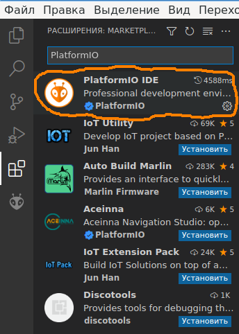

После долгих попыток настроить возможность работы с микроконтроллером STM32F103C8T6 в среде Qt Creator, и получив в конце концов очень неудобный и, можно сказать, неудовлетворительный результат, было решено попробовать другие свободные среды разработки. Здесь рассказывается о том, как настроить бесплатную IDE VS Code (Visual Studio Code) от компании Microsoft, распространяемую по открытой лицензии MIT.
Для контраста могу сказать, что для того, чтобы разобраться и настроить в Qt Creator возможность работать с микроконтроллером, у меня ушло более трех месяцев вечерних посиделок, в течении которых не раз опускались руки. И если бы я лично не знал человека, который смог настроить Qt Creator под похожий микроконтроллер, я бы считал эту задачу вообще невыполнимой. С VS Code удалось разобраться за два дня.
VS Code + PlatformIO
Легковестная (по меркам Microsoft, конечно) среда разработки VS Code имеет неплохую подсистему создания плагинов. И исторически так сложилось, что появилось сообщество разработчиков встраиваемых систем (embedded development), которые написали отличный плагин под названием PlatformIO. Это большой и развесистый плагин, который позволяет создать на основе VS Code среду разработки под микроконтроллеры. На момент написания этой статьи данный плагин поддерживает более тысячи плат с различными семействами микропроцессоров и контроллеров на борту.
Итак, VS Code можно взять с официального сайта:
https://code.visualstudio.com/download
Сразу предупрежу, что под Linux существуют сборки только под x86_64, если рабочая станция использует процессоры Intel или AMD. Надеюсь, 2022 году это не проблема.
Плагин PlatformIO устанавливается в разделе настроек плагинов:

Важно понимать, что такой режим установки возможен только при наличии доступа в Интернет на машине разработчика.
Установка PlatformIO без доступа в Интернет
Как установить данный плагин при отсутствии доступа в Интернет (некоторым разрабочикам это важно), пока непонятно. Возможно, помогут следующие ссылки:
https://platformio.org/install/ide?install=vscode
https://marketplace.visualstudio.com/items?itemName=platformio.platformio-ide
https://docs.platformio.org/en/latest//integration/ide/vscode.html#installation
На мысли наводит вот эта рекомендация:
Please note that you need to install a Git client if you are going to use Git for installing upstream development platforms, cloning external projects, installing library dependencies from a repository, etc.
То есть, для того, чтобы установился плагин PlatformIO, необходимо, чтобы на Linux-компьютере стоял Git-клиент. А это значит, что PlatformIO можно брать из официальных репозитариев на GtHub:
https://github.com/platformio
Вопрос только в том, какие конкретно проекты надо выкачивать, и как их подключать в VS Code.